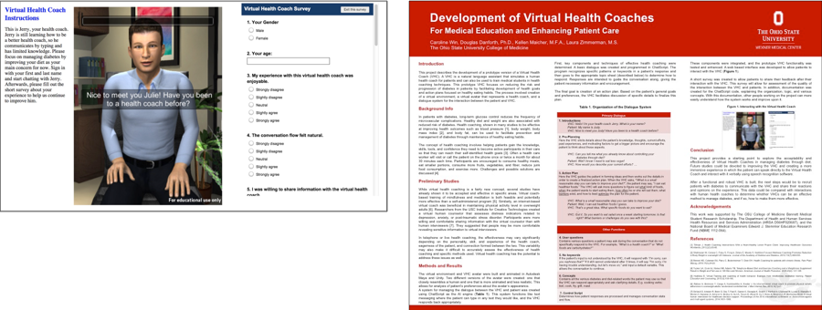
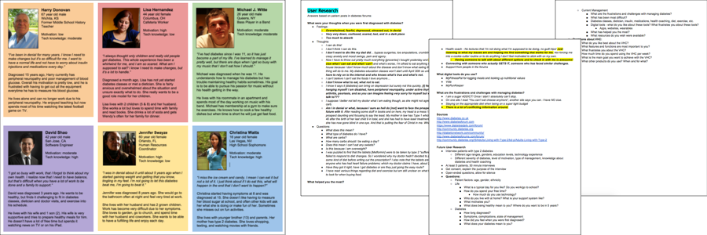
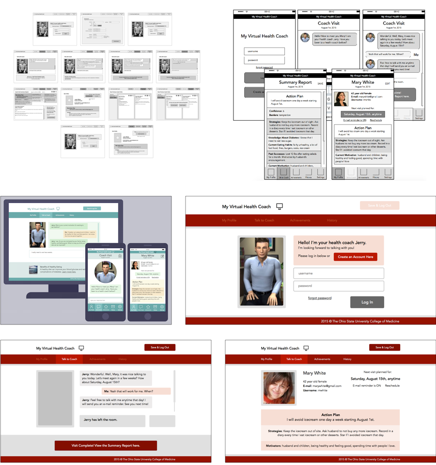

Web app that guides patients in creating and reaching health goals
Scope: Research Project
Client: The Ohio State University College of Medicine
Target Audience: Type 2 Diabetes Patients
Team: Douglas Danforth, PhD (Faculty Advisor, Principal Investigator), Kellen Maicher, MFA, Caroline Win, Laura Zimmerman
My Role: UX / UI Designer, CHatScript Developer, Research Assistant
Timeline: May 2014 - Nov 2015
Design and develop a Virtual Health Coach (VHC), a web application with a virtual character who functions as a health coach and guides patients with Type 2 Diabetes in developing health goals and a plan to achieve those goals.
This project was a sub-project for a proposal by The OSU College of Medicine to create VHCs and determine whether they can improve glycemic control and other endpoints in patients with Type 2 Diabetes. During the summer of 2014, I was funded by the Bennett Medical Student Research Scholarship to develop a prototype VHC that focuses on improving eating habits in Type 2 Diabetes patients.
Goal: Create a functioning prototype VHC that can ask patients relevant questions and respond to potential patient responses.
My main roles in this iteration: medical student and programmer. I used my knowledge about health coaching techniques and programming in ChatScript (the AI engine) to develop the conversational functionality of the VHC.
What is a health coach? A health coach is a professional who guides patients in setting behavioral health goals, creating an action plan to achieve those goals, and recognizing and working through challenges. He or she does not provide medical advice but instead provides resources to find necessary information and primarily asks self-reflective questions to guide the patient in learning to independently manage his or her health.
In my background research, I sought to find answers to these questions:
Yes, health coaching has been shown to be effective to improve health measures such as BMI and blood sugar in patients with diabetes. Health coaching helps patients learn to independently manage their own health. The primary technique is motivational interviewing. A study on virtual coaching for patients with PTSD showed potential for effectiveness. Patients feel less self-conscious when speaking with a virtual character than a human.
Based on my research and knowledge about health coaching techniques, I created conversation flow diagrams showing how the VHC would respond to the user. Below is an example of how the conversation might go.
Coach: Good to see you again Judy! How have you been doing with your action plan?
Judy: Not too bad, I was able to cut down on my ice cream intake quite a bit. I actually only had it 3 times this week!
Coach: That's great! You are definitely making progress towards your goals. What do you think are the next steps you need to take?
Judy: Well right now I really want to get to a point where I don't feel the urge to eat ice cream at all. So I'd like to cut it out completely.
Coach: Sounds like you are right on track!
I then used ChatScript to program the conversational ability of the VHC. The character was represented visually by an animated 3D model, and the two systems were integrated in game engine Unity. Finally, the application was combined with a survey and instructions on a web interface.
Team member Kellen Maicher, MFA, modeled and animated the 3D character and environment. We focused on making the character appear friendly, empathetic, and professional, important qualities in a health coach. We discussed ideas for the future such as including VHCs of different genders, ages, ethnicities, and art styles.
Now that a functioning prototype was built, we were able to send it out to stakeholders and other lab members to test. As expected, a lot of programming issues and awkward conversations were discovered. The issues found in this first pass were corrected to create the final prototype of iteration 1!
The research, planning process, prototype development, and evaluation were compiled into a final report and poster presentation. I presented this poster at OSU Research Day on April 15, 2015.
For Iteration 2 in the summer of 2015, I took a more design-oriented approach and conducted more in-depth stakeholder interviews and user research. I also spent more time designing the interface of the application.
First I interviewed stakeholders such as the Principle Investigator Dr. Danforth, physicians Dr. Dungan and Dr. Mack, and a professional health coach about the project vision, requirements, ideas, and preferences. I then created a document with goals, requirements, and notes from the interviews.
I researched the patient’s perspective by reading diabetes forums and watching interviews of patients with diabetes. I also researched health coaching techniques and diabetes management. I then created proto-personas of several different patients with Type 2 Diabetes.
After my research, I lead a strategy workshop with the team where we discussed strengths and weaknesses of the current prototype and came up with new ideas. I created a list of goals to improve the prototype and create a more user-friendly and useful Virtual Health Coach.
Using Google Slides, I created simple wireframes of the user interface and flow to facilitate discussion with the team. I then made some adjustments and designed digital mock-ups of the interface using Google Slides and InvisionApp to make the mock-ups interactive.
The next steps of this project will involve conducting user research with actual Type 2 Diabetes patients, since my research was conducted using diabetes forums and interviews. Then, once a more robust prototype is built with the newly designed interface, we will need to do more user testing. Eventually, we would make improvements based on the testing and feedback and test the VHC on actual patient volunteers.
Overall this was a project I was very passionate about since I am interested in digital health. I believe that a virtual health coach could potentially be very useful for patients who do not have access to an actual professional health coach or just want a bit of guidance without worrying about being judged by another human. Health coaching itself is proven to be an effective technique in improving health outcomes. With the guidance of professional health coaches, the VHC could become a very effective health application.
Next Project →